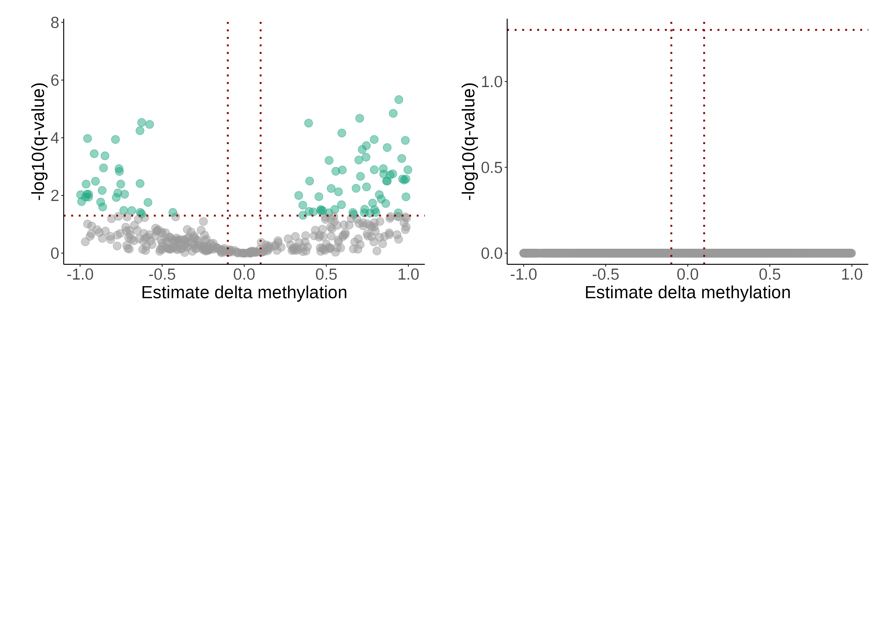
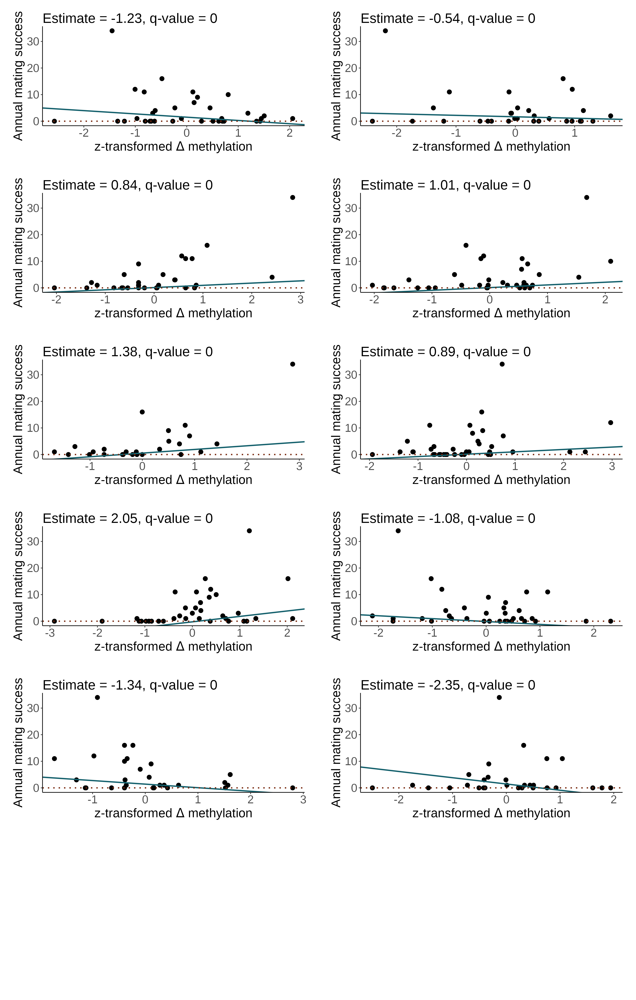
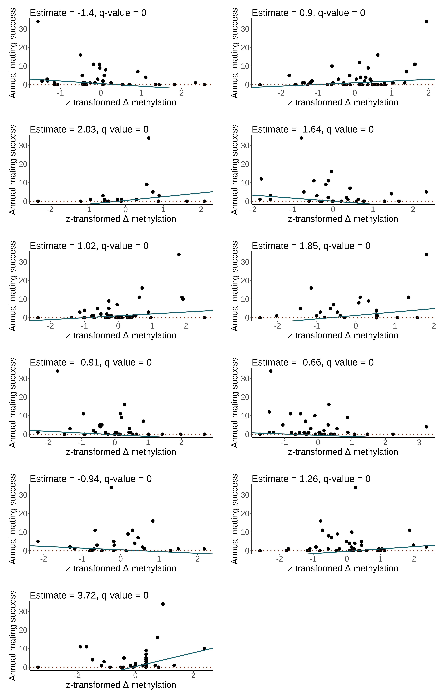

### load packages
pacman::p_load(tidyverse, data.table, tibble, performance, matrixStats,
parallel, performance, lmerTest, tidystats, insight, glmmTMB)
### load data
load(file = "results/modeloutput/subset_sites_sig_deltameth.RData")
### load phenotypic data
load("data/phenotypes/fulldata_complete_epi_withdates.RData")
#combine with site and fitness data
pheno_pre <- subset(all_pheno_epi, prepost=="pre")
delta_meth <- left_join(delta_meth, unique(pheno_pre[,c("id", "year", "MS", "surv")]), by = c("id", "year"))
delta_meth_ls <- delta_meth %>% group_split(chr_pos)7 Fitness effects
Which changes in CpG site methylation are associated with fitness?
In this script, we test for which CpG site changes are significantly associated with fitness, measured as annual mating success (AMS) and survival to the next year.
We build two GLMMs per CpG site, one for AMS and one for survival, to identify CpG sites whose DNA methylation change is associated with fitness. In these models, we predict AMS and survival, and include delta methylation as a fixed effect, as well as age and pre-lekking methylation.
7.1 Prepare the data
7.2 Function to run the model
Below you’ll find the full function to run the model per CpG site, where two models are run:
One for annual mating success (AMS): glmmTMB(MS ~ scale(delta_meth) + age + scale(methperc_pre) + (1|site/id), family = "poisson", ziformula=~1)
And one for survival: glmmTMB(surv ~ scale(delta_meth) + age + scale(methperc_pre) + (1|site/id), family = "binomial")
Code
# function to run the model
function_model_fitness <- function(df){tryCatch({
chr_pos <- as.character(df[1,1])
df <- as.data.frame(df)
df$site <- as.factor(df$site)
df$id <- as.factor(df$id)
### AMS
formula_ams <- formula(paste0("MS ~ scale(delta_meth) + age + scale(methperc_pre) + (1|site/id) "))
model_ams <- glmmTMB(formula_ams, data=df, family = "poisson", ziformula=~1)
summary_ams <- summary(model_ams)
#fixed effect
parameter_estimate <- summary_ams$coefficients$cond["scale(delta_meth)", "Estimate"]
parameter_se <- summary_ams$coefficients$cond["scale(delta_meth)","Std. Error"]
parameter_zval <- summary_ams$coefficients$cond["scale(delta_meth)","z value"]
parameter_pval <- summary_ams$coefficients$cond["scale(delta_meth)", "Pr(>|z|)"]
#age effect
age_estimate <- summary_ams$coefficients$cond["age", "Estimate"]
age_se <- summary_ams$coefficients$cond["age", "Std. Error"]
age_zval <- summary_ams$coefficients$cond["age", "z value"]
age_pval <- summary_ams$coefficients$cond["age", "Pr(>|z|)"]
#premeth effect
pre_estimate <- summary_ams$coefficients$cond["scale(methperc_pre)", "Estimate"]
pre_se <- summary_ams$coefficients$cond["scale(methperc_pre)", "Std. Error"]
pre_zval <- summary_ams$coefficients$cond["scale(methperc_pre)", "z value"]
pre_pval <- summary_ams$coefficients$cond["scale(methperc_pre)", "Pr(>|z|)"]
rsqc <- performance::r2(model_ams)$R2_conditional #fixed plus random parameterects relative to overall variance
rsqm <- performance::r2(model_ams)$R2_marginal #fixed parameterects relative to overall variance
message <- model_ams$fit$message
icc_id_site <-icc(model_ams, by_group = TRUE, tolerance = 0)[1,2]
icc_site <-icc(model_ams, by_group = TRUE, tolerance = 0)[2,2]
ams <- data.frame(chr_pos=as.factor(chr_pos),
ams_icc_id_site = as.numeric(icc_id_site),
ams_icc_site = as.numeric(icc_site),
ams_delta_meth_estimate = as.numeric(parameter_estimate),
ams_delta_meth_se = as.numeric(parameter_se),
ams_delta_meth_zval = as.numeric(parameter_zval),
ams_delta_meth_pval = as.numeric(parameter_pval),
ams_age_estimate = as.numeric(age_estimate),
ams_age_se = as.numeric(age_se),
ams_age_zval = as.numeric(age_zval),
ams_age_pval = as.numeric(age_pval),
ams_pre_estimate = as.numeric(pre_estimate),
ams_pre_se = as.numeric(pre_se),
ams_pre_zval = as.numeric(pre_zval),
ams_pre_pval = as.numeric(pre_pval),
ams_rsqc = as.numeric(rsqc),
ams_rsqm = as.numeric(rsqm),
ams_message = message
)
### surv
formula_surv <- formula(paste0("surv ~ scale(delta_meth) + age + scale(methperc_pre) + (1|site/id) "))
model_surv <- glmmTMB(formula_surv, data=df, family = "binomial")
summary_surv <- summary(model_surv)
#fixed effect
parameter_estimate <- summary_surv$coefficients$cond["scale(delta_meth)", "Estimate"]
parameter_se <- summary_surv$coefficients$cond["scale(delta_meth)","Std. Error"]
parameter_zval <- summary_surv$coefficients$cond["scale(delta_meth)","z value"]
parameter_pval <- summary_surv$coefficients$cond["scale(delta_meth)", "Pr(>|z|)"]
#age effect
age_estimate <- summary_surv$coefficients$cond["age", "Estimate"]
age_se <- summary_surv$coefficients$cond["age", "Std. Error"]
age_zval <- summary_surv$coefficients$cond["age", "z value"]
age_pval <- summary_surv$coefficients$cond["age", "Pr(>|z|)"]
#premeth effect
pre_estimate <- summary_surv$coefficients$cond["scale(methperc_pre)", "Estimate"]
pre_se <- summary_surv$coefficients$cond["scale(methperc_pre)", "Std. Error"]
pre_zval <- summary_surv$coefficients$cond["scale(methperc_pre)", "z value"]
pre_pval <- summary_surv$coefficients$cond["scale(methperc_pre)", "Pr(>|z|)"]
rsqc <- performance::r2(model_surv)$R2_conditional #fixed plus random parameterects relative to overall variance
rsqm <- performance::r2(model_surv)$R2_marginal #fixed parameterects relative to overall variance
message <- model_surv$fit$message
icc_id_site <-icc(model_surv, by_group = TRUE, tolerance = 0)[1,2]
icc_site <-icc(model_surv, by_group = TRUE, tolerance = 0)[2,2]
surv <- data.frame(surv_icc_id_site = as.numeric(icc_id_site),
surv_icc_site = as.numeric(icc_site),
surv_delta_meth_estimate = as.numeric(parameter_estimate),
surv_delta_meth_se = as.numeric(parameter_se),
surv_delta_meth_zval = as.numeric(parameter_zval),
surv_delta_meth_pval = as.numeric(parameter_pval),
surv_age_estimate = as.numeric(age_estimate),
surv_age_se = as.numeric(age_se),
surv_age_zval = as.numeric(age_zval),
surv_age_pval = as.numeric(age_pval),
surv_pre_estimate = as.numeric(pre_estimate),
surv_pre_se = as.numeric(pre_se),
surv_pre_zval = as.numeric(pre_zval),
surv_pre_pval = as.numeric(pre_pval),
surv_rsqc = as.numeric(rsqc),
surv_rsqm = as.numeric(rsqm),
surv_message = message
)
out <- cbind(ams, surv)
return(out)
}, error = function(e){cat("ERROR :", conditionMessage(e), "\n");print(chr_pos)})
}7.3 Run the model
### run the model
# run model
delta_out_fitness <- parallel::mclapply(delta_meth_ls, function_model_fitness,mc.cores=12)
delta_out_fitness <- do.call(rbind.data.frame, delta_out_fitness)
# convert to numeric
delta_out_fitness$ams_delta_meth_estimate <- as.numeric(delta_out_fitness$ams_delta_meth_estimate)
delta_out_fitness$surv_delta_meth_estimate <- as.numeric(delta_out_fitness$surv_delta_meth_estimate)
# exclude those with convergence errors
delta_out_ams <- subset(delta_out_fitness, ams_message == "relative convergence (4)")
delta_out_surv <- subset(delta_out_fitness, surv_message == "relative convergence (4)")
# FDR correction
delta_out_ams$ams_delta_meth_qval <- p.adjust(delta_out_ams$ams_delta_meth_pval, method = "fdr", n = nrow(delta_out_ams))
delta_out_surv$surv_delta_meth_qval <- p.adjust(delta_out_surv$surv_delta_meth_pval, method = "fdr", n = nrow(delta_out_surv))
delta_out_ams$chr_pos <- as.factor(delta_out_ams$chr_pos)
delta_out_surv$chr_pos <- as.factor(delta_out_surv$chr_pos)7.4 Results
There are 481 significant CpG sites for AMS but none for survival. Below you can see the volcano plot and the raw data plots of the four most significant CpG sites.


